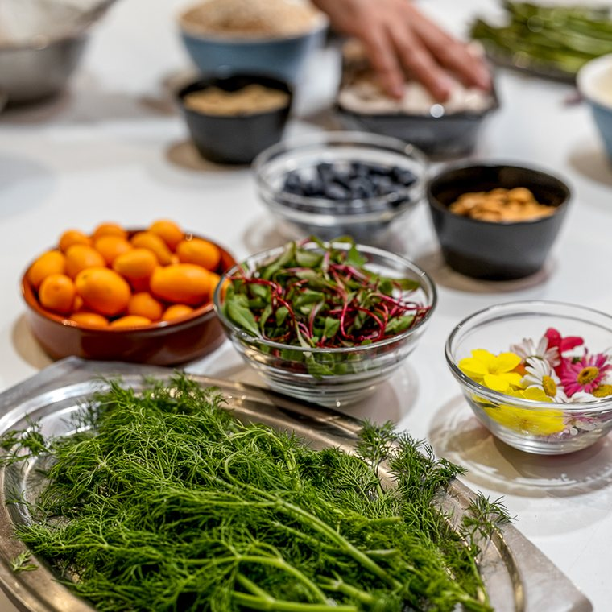

Una noche donde cocinás, aprendés y compartís.
Una noche, el viernes 23 de octubreCena y Taller de Tapeo
Cocinamos entre todos, cada uno en su puesto. Gyozas de hongos y verduras, gírgolas asadas, buñuelos de chucrut y croquetas de puerro. Después nos sentamos a comerlos, con las dos copas de vino o kombucha que entran, y la sobremesa que salga. Solo 12 lugares.
¿Buscás una actividad para tu empresa? Team building gastronómico
